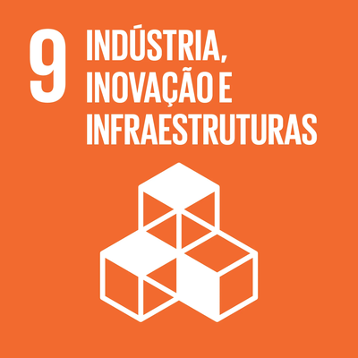

Sou estudante de Engenharia de Software (6º período) com forte base em lógica de programação e algoritmos, buscando estagiar na área de Tecnologia da Informação. Tenho vivência acadêmica no desenvolvimento de aplicações utilizando Java, JavaScript e TypeScript, com boas práticas de programação. Possuo sólida base teórica e prática em estrutura de dados e algoritmos, aplicando Programação Orientada a Objetos (POO), focando em códigos modulares e escaláveis. Tenho grande facilidade de aprendizado e adaptação a novas tecnologias. Valorizo código de alta qualidade, colaboração em equipe e aprendizado contínuo.
Seus principais interesses de pesquisa são: Inteligência Artificial, Empreendedorismo
